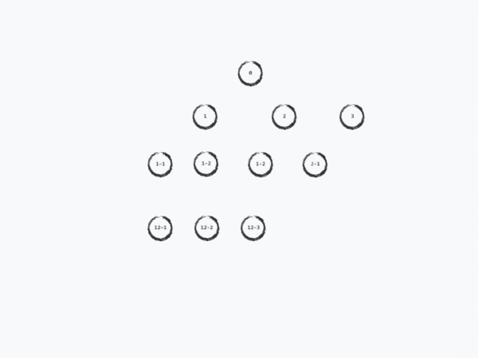
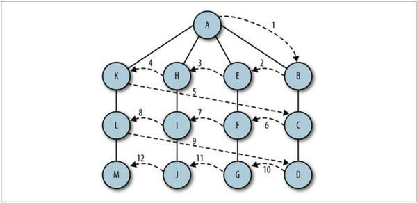

javascript实现Tarjan算法寻找有向图的强连通分量
文章目录
javascript实现Tarjan算法寻找有向图的强连通分量
本文将介绍如何用javascript实现Tarjan算法来寻找图的强连通分量，在此之前，会简单介绍一些图的定义，图的邻接表和邻接矩阵表示法，图的两种遍历方法，在解决问题的时候如何选用正确的数据结构来表示图
目录
有关图的一些定义
图由边的集合和顶点的集合组成
强连通：在有向图中，如果两个顶点之间有路径，则称该两点是强连通的
强连通图：在有向图中，任意两个顶点都是强连通的
强连通分量：有向图的极大连通子图，称为强连通分量
图的表示
对于图G(V,E)，有以下定义 稀疏图：边的条数|E|远远小于$$|V|^2$$ 稠密图：边的条数|E|接近$$|V|^2$$
假设对于图G, 节点和边如下图:
转化为计算机语言，一般有两种表示方式，邻接链表和邻接矩阵。
邻接链表
由包含|V|条链表的的数组Adj构成 结构如下： 0 -> [1, 2] 1 -> [2] 2 -> []
空间复杂度o(V+E)
优点：鲁棒性高，可以通过简单的修改来表示一些图的其他变种
缺点：无法快速判断两个节点u、v之间是否存在一条边，只能通过链表Adj[u]来搜索v节点
ps:链表和数组很相似，在javascript中，数组是基于对象实现的，与其他语言(java、c++)的数组相比是非常低效的。在很多编程语言中，数组的长度是固定的，往数组中增加或者删除元素很麻烦，需要移动其他元素，而在javascript中不存在这个问题，直接用split()方法就可以了。所以，我们也可以直接用数组来实现邻接链表，但是，当你在实际应用中遇到数组很慢的时候，可以考虑实现下链表结构。
邻接矩阵
由一个|V| x |V| 的矩阵A构成 结构如下：
[
[0, 1, 1],
[0, 0, 1],
[0, 0, 0]
]
空间复杂度：o($$V^2$$)
优点：简单，在图的规模不大的时候尤其好用，对于无向图，邻接矩阵是对称矩阵，因此只需要占用一半的空间
缺点：存储空间消耗大，尤其在表示稀疏图的时候，浪费存储空间
图的遍历
深度优先搜索DFS
原理：
1.访问一个没有访问过的节点，将它标记为已访问
2.再递归地去访问初始节点的邻接链表中其他没有访问到的节点
示意图： 
广度优先搜索BFS
原理：
1.查找与当前节点相邻的未访问的节点，将其添加到已访问节点列表和队列中
2.从图中取出下一个顶点v，添加到已访问的节点列表
3.将所有与v相邻的未访问的节点添加到队列
示意图： 
Tarjan算法
接下来详细介绍Tarjan算法寻找有向图的强连通分量.
基本思想：任选一节点开始进行深度优先搜索（若深度优先搜索结束后仍有未访问的节点，则再从中任选一点再次进行）。搜索过程中已访问的节点不再访问。搜索树的若干子树构成了图的强连通分量。
首先还是dfs过程 （注意搜过的点不会再搜） 则能产生环的只有 指向已经遍历过的点的边

只有红色与绿色边有可能产生环。 对于深搜过程，我们需要一个栈来保存当前所在路径上的所有点（栈中所有点一定是有父子关系的） 再仔细观察红边与绿边，首先得到结论：红边不产生环，绿边产生环
1.对于红边，连接的两个点3、7没有父子关系，这种边称为横叉边。 横叉边一定不产生环。
2.对于绿边，连接的两个点6、4是父子关系，这种边称为后向边。 环一定由后向边产生。
图中除了黑色的树枝边，一定只有横叉边和后向边（不存在其他种类的边）
对下面两种边进行处理

Stack = {1,2,3}。3没有多余的其他边，因此3退栈，把3作为一个强连通分量
再次深搜

此时栈 Stack = {1,2,7} 发现红边指向了已经遍历过的点3 => 是上述的2种边之一 而3不在栈中 => 3点与7点无父子关系 => 该边为横叉边 => 采取无视法。
继而7点退栈 产生连通分量{7} 继而2点退栈 产生连通分量{2}
再次深搜

此时 Stack = {1,4,5,6} 发现绿边指向了已经遍历过的点4 => 是上述的2种边之一 而4在栈中 => 4点与6点是父子关系 => 该边为后向边 => 4->6的路径上的点都是环。
实际上可能会出现大环套小环

出现了大环套小环的情况，显然我们认为最大环是一个强连通分量(即:{4,5,6,8} ）
因而我们需要强化一下dfs过程，增添几个变量来记录父节点和后向边的情况
首先，给每个节点v两个变量来标记：
1.index 表示遍历到v点时是第几次dfs，时间戳。比如第一次dfs的index的值为 1，第二次dfs的index的值为 2，以此类推。可以通过比较大小来判断是爸爸还是儿子。（是后向边还是横插边？）
2.lowIndex 表示从该节点v出发经过有向边可到达的所有节点中最小的index
显然，v.lowIndex总是不大于v.index，当从v出发经有向边不能到达其他节点时，这两个值相等
伪代码：
algorithm tarjan is
input: 图 G = (V, E)
output: 以所在的强连通分量划分的顶点集
index := 0
S := empty // 将栈置空
for each v in V do
if (v.index is undefined)
strongconnect(v)
end if
function strongconnect(v)
// 将未使用的最小index值作为节点v的index
v.index := index
v.lowlink := index
index := index + 1
S.push(v)
// 考虑v的后继节点
for each (v, w) in E do
if (w.index is undefined) then
// 后继节点w未访问，递归
strongconnect(w)
v.lowlink := min(v.lowlink, w.lowlink)
else if (w is in S) then
// w已在栈S中，即在当前强连通分量中
v.lowlink := min(v.lowlink, w.index)
end if
// 若v是根则出栈，并求得一个强连通分量
if (v.lowlink = v.index) then
start a new strongly connected component
repeat
w := S.pop()
add w to current strongly connected component
until (w = v)
output the current strongly connected component
end if
end function
对每个节点，过程strongconnect只被调用一次；整个程序中每条边最多被考虑一次。因此算法的运行时间关于图的边数是线性的，所以算法复杂度：O(|V|+|E|)
分图算法
function components(g) {
var visited = {},
cmpts = [],
cmpt;
function dfs(v) {
if (_.has(visited, v)) return;
visited[v] = true;
cmpt.push(v);
_.each(g.successors(v), dfs);
_.each(g.predecessors(v), dfs);
}
_.each(g.nodes(), function(v) {
cmpt = [];
dfs(v);
if (cmpt.length) {
cmpts.push(cmpt);
}
});
return cmpts;
}
文章作者 Hellohy
上次更新 2018-03-22